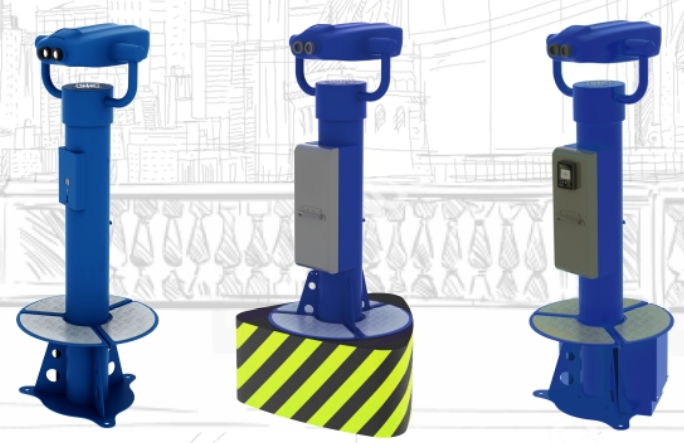
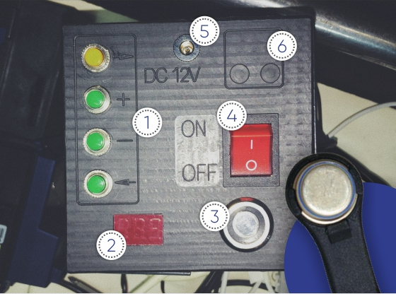

Как за 2 месяца окупить смотровые бинокли, выйти на доход в 100 000 руб/месяц чистыми без затрат на сырье, "расходники" и содержание, используя смотровые бинокли Binocular?

За последние 8 лет командой "Binocular" было выполнено свыше 150 заказов
на изготовление, установку и техническое обслуживание биноклей для
смотровых площадок. Это позволило собрать настоящую "базу ошибок" рынка
смотровых биноклей.
Владельцы бизнеса чаще всего сталкиваются
-
aldsvjgbldskjjvbasdl
-
dlifusugvadlsvhalsdjvl
-
dkshgvldwvglasdjv